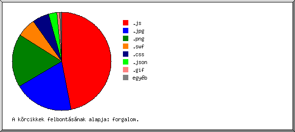

Web Szerver Statisztika: [www.nagyfimerleg.hu]
Web Szerver Statisztika: [www.nagyfimerleg.hu]
Futás kezdete csüt, 2016. jan. 14. 01:28.
Kérelmek analizálva: csüt, 2015. dec. 17. 17:08 - pén, 2016. jan. 08. 10:06 (21,71 nap).
Web Szerver Statisztika: [www.nagyfimerleg.hu]Futás kezdete csüt, 2016. jan. 14. 01:28.
Kérelmek analizálva: csüt, 2015. dec. 17. 17:08 - pén, 2016. jan. 08. 10:06 (21,71 nap).
(Ugrás: Oldal teteje | Általános összesítés | Éves Jelentés | Havi jelentés | Heti jelentés | Napi jelentés | Napi összesítés | Óránkénti összesítés | Domain szerinti jelentés | Szervezet szerinti jelentés | Host szerinti jelentés | Hivatkozó site-ok jelentése | Böngészõk szerinti összesítés | A böngészõ operációs rendszere szerinti jelentés | Fájltípus szerinti jelentés | Könyvtár szerinti jelentés | Kérelem szerinti jelentés)
A zárójeles számok utalnak: 7 nap 2016. jan. 14. 01:28.
Összes sikeres kérelem: 438 (172)
Átlagos sikeres napi kérelem: 20 (24)
Összes sikeres oldal kérelem: 29 (0)
Átlagos sikeres napi oldal kérelem: 1
Sikertelen kérelem: 34 (16)
Átirányított kérelem: 2 (0)
Különbözõ kért fájlok: 112 (23)
Különbözõ kiszolgált host-ok: 5 (3)
Átvitt adat: 4,26 megabyte (1,59 megabyte)
Átlagos napi adatátvitel: 200,99 kilobyte (232,40 kilobyte)
(Ugrás: Oldal teteje | Általános összesítés | Éves Jelentés | Havi jelentés | Heti jelentés | Napi jelentés | Napi összesítés | Óránkénti összesítés | Domain szerinti jelentés | Szervezet szerinti jelentés | Host szerinti jelentés | Hivatkozó site-ok jelentése | Böngészõk szerinti összesítés | A böngészõ operációs rendszere szerinti jelentés | Fájltípus szerinti jelentés | Könyvtár szerinti jelentés | Kérelem szerinti jelentés)
Minden egység ( ) 1 oldal kérelmet.
) 1 oldal kérelmet.
| év | kér. | oldal | |
|---|---|---|---|
| 2015 | 215 | 29 |    |
| 2016 | 223 | 0 |
Legaktívabb év: 2015 (29 oldal kérelmeit).
(Ugrás: Oldal teteje | Általános összesítés | Éves Jelentés | Havi jelentés | Heti jelentés | Napi jelentés | Napi összesítés | Óránkénti összesítés | Domain szerinti jelentés | Szervezet szerinti jelentés | Host szerinti jelentés | Hivatkozó site-ok jelentése | Böngészõk szerinti összesítés | A böngészõ operációs rendszere szerinti jelentés | Fájltípus szerinti jelentés | Könyvtár szerinti jelentés | Kérelem szerinti jelentés)
Minden egység () 1 oldal kérelmet.
| hónap | kér. | oldal | |
|---|---|---|---|
| 2015. dec . | 215 | 29 | |
| 2016. jan . | 223 | 0 |
Legforgalmasabb hónap: 2015. dec. (29 oldal kérelmeit).
(Ugrás: Oldal teteje | Általános összesítés | Éves Jelentés | Havi jelentés | Heti jelentés | Napi jelentés | Napi összesítés | Óránkénti összesítés | Domain szerinti jelentés | Szervezet szerinti jelentés | Host szerinti jelentés | Hivatkozó site-ok jelentése | Böngészõk szerinti összesítés | A böngészõ operációs rendszere szerinti jelentés | Fájltípus szerinti jelentés | Könyvtár szerinti jelentés | Kérelem szerinti jelentés)
Minden egység () 1 oldal kérelmet.
| hét eleje | kér. | oldal | |
|---|---|---|---|
| 15.dec .13 | 161 | 29 | |
| 15.dec .20 | 48 | 0 | |
| 15.dec .27 | 6 | 0 | |
| 16.jan . 3 | 223 | 0 |
Legforgalmasabb hét: hét eleje 15.dec.13 (29 oldal kérelmeit).
(Ugrás: Oldal teteje | Általános összesítés | Éves Jelentés | Havi jelentés | Heti jelentés | Napi jelentés | Napi összesítés | Óránkénti összesítés | Domain szerinti jelentés | Szervezet szerinti jelentés | Host szerinti jelentés | Hivatkozó site-ok jelentése | Böngészõk szerinti összesítés | A böngészõ operációs rendszere szerinti jelentés | Fájltípus szerinti jelentés | Könyvtár szerinti jelentés | Kérelem szerinti jelentés)
Minden egység () 1 oldal kérelmet.
| dátum | kér. | oldal | |
|---|---|---|---|
| 15.dec .17 | 3 | 1 | |
| 15.dec .18 | 158 | 28 | |
| 15.dec .19 | 0 | 0 | |
| 15.dec .20 | 0 | 0 | |
| 15.dec .21 | 14 | 0 | |
| 15.dec .22 | 34 | 0 | |
| 15.dec .23 | 0 | 0 | |
| 15.dec .24 | 0 | 0 | |
| 15.dec .25 | 0 | 0 | |
| 15.dec .26 | 0 | 0 | |
| 15.dec .27 | 0 | 0 | |
| 15.dec .28 | 6 | 0 | |
| 15.dec .29 | 0 | 0 | |
| 15.dec .30 | 0 | 0 | |
| 15.dec .31 | 0 | 0 | |
| 16.jan . 1 | 0 | 0 | |
| 16.jan . 2 | 0 | 0 | |
| 16.jan . 3 | 0 | 0 | |
| 16.jan . 4 | 0 | 0 | |
| 16.jan . 5 | 51 | 0 | |
| 16.jan . 6 | 0 | 0 | |
| 16.jan . 7 | 14 | 0 | |
| 16.jan . 8 | 158 | 0 |
Legforgalmasabb nap: 15.dec.18 (28 oldal kérelmeit).
(Ugrás: Oldal teteje | Általános összesítés | Éves Jelentés | Havi jelentés | Heti jelentés | Napi jelentés | Napi összesítés | Óránkénti összesítés | Domain szerinti jelentés | Szervezet szerinti jelentés | Host szerinti jelentés | Hivatkozó site-ok jelentése | Böngészõk szerinti összesítés | A böngészõ operációs rendszere szerinti jelentés | Fájltípus szerinti jelentés | Könyvtár szerinti jelentés | Kérelem szerinti jelentés)
Minden egység () 1 oldal kérelmet.
| nap | kér. | oldal | |
|---|---|---|---|
| vas | 0 | 0 | |
| hét | 20 | 0 | |
| kedd | 85 | 0 | |
| sze | 0 | 0 | |
| csüt | 17 | 1 | |
| pén | 316 | 28 | |
| szo | 0 | 0 |
(Ugrás: Oldal teteje | Általános összesítés | Éves Jelentés | Havi jelentés | Heti jelentés | Napi jelentés | Napi összesítés | Óránkénti összesítés | Domain szerinti jelentés | Szervezet szerinti jelentés | Host szerinti jelentés | Hivatkozó site-ok jelentése | Böngészõk szerinti összesítés | A böngészõ operációs rendszere szerinti jelentés | Fájltípus szerinti jelentés | Könyvtár szerinti jelentés | Kérelem szerinti jelentés)
Minden egység () 1 oldal kérelmet.
| ó. | kér. | oldal | |
|---|---|---|---|
| 0 | 0 | 0 | |
| 1 | 0 | 0 | |
| 2 | 0 | 0 | |
| 3 | 0 | 0 | |
| 4 | 0 | 0 | |
| 5 | 0 | 0 | |
| 6 | 23 | 0 | |
| 7 | 0 | 0 | |
| 8 | 0 | 0 | |
| 9 | 135 | 0 | |
| 10 | 14 | 0 | |
| 11 | 39 | 0 | |
| 12 | 0 | 0 | |
| 13 | 158 | 28 | |
| 14 | 1 | 0 | |
| 15 | 0 | 0 | |
| 16 | 22 | 0 | |
| 17 | 16 | 1 | |
| 18 | 0 | 0 | |
| 19 | 30 | 0 | |
| 20 | 0 | 0 | |
| 21 | 0 | 0 | |
| 22 | 0 | 0 | |
| 23 | 0 | 0 |
(Ugrás: Oldal teteje | Általános összesítés | Éves Jelentés | Havi jelentés | Heti jelentés | Napi jelentés | Napi összesítés | Óránkénti összesítés | Domain szerinti jelentés | Szervezet szerinti jelentés | Host szerinti jelentés | Hivatkozó site-ok jelentése | Böngészõk szerinti összesítés | A böngészõ operációs rendszere szerinti jelentés | Fájltípus szerinti jelentés | Könyvtár szerinti jelentés | Kérelem szerinti jelentés)
domain listázása, rendezve: forgalom.
| kér. | %byte | domain |
|---|---|---|
| 438 | 100% | .hu (Hungary) |
(Ugrás: Oldal teteje | Általános összesítés | Éves Jelentés | Havi jelentés | Heti jelentés | Napi jelentés | Napi összesítés | Óránkénti összesítés | Domain szerinti jelentés | Szervezet szerinti jelentés | Host szerinti jelentés | Hivatkozó site-ok jelentése | Böngészõk szerinti összesítés | A böngészõ operációs rendszere szerinti jelentés | Fájltípus szerinti jelentés | Könyvtár szerinti jelentés | Kérelem szerinti jelentés)

szervezet listázása, rendezve: kérelmek száma.
| kér. | %byte | szervezet |
|---|---|---|
| 228 | 55,12% | broadband.hu |
| 172 | 33,91% | mobillan.hu |
| 23 | 7,03% | digikabel.hu |
| 15 | 3,95% | telekom.hu |
(Ugrás: Oldal teteje | Általános összesítés | Éves Jelentés | Havi jelentés | Heti jelentés | Napi jelentés | Napi összesítés | Óránkénti összesítés | Domain szerinti jelentés | Szervezet szerinti jelentés | Host szerinti jelentés | Hivatkozó site-ok jelentése | Böngészõk szerinti összesítés | A böngészõ operációs rendszere szerinti jelentés | Fájltípus szerinti jelentés | Könyvtár szerinti jelentés | Kérelem szerinti jelentés)
host listázása, betûrend szerint rendezve.
| kér. | %byte | host |
|---|---|---|
| 228 | 55,12% | catv-80-98-219-68.catv.broadband.hu |
| 23 | 7,03% | 94-21-123-148.pool.digikabel.hu |
| 158 | 27,05% | host-185-11-174-25.mobillan.hu |
| 14 | 6,86% | host-185-11-175-31.mobillan.hu |
| 15 | 3,95% | 254c2799.nat.pool.telekom.hu |
(Ugrás: Oldal teteje | Általános összesítés | Éves Jelentés | Havi jelentés | Heti jelentés | Napi jelentés | Napi összesítés | Óránkénti összesítés | Domain szerinti jelentés | Szervezet szerinti jelentés | Host szerinti jelentés | Hivatkozó site-ok jelentése | Böngészõk szerinti összesítés | A böngészõ operációs rendszere szerinti jelentés | Fájltípus szerinti jelentés | Könyvtár szerinti jelentés | Kérelem szerinti jelentés)
hivatkozó site listázása, rendezve: kérelmek száma.
| kér. | site |
|---|---|
| 431 | http://www.nagyfimerleg.xls.hu/ |
(Ugrás: Oldal teteje | Általános összesítés | Éves Jelentés | Havi jelentés | Heti jelentés | Napi jelentés | Napi összesítés | Óránkénti összesítés | Domain szerinti jelentés | Szervezet szerinti jelentés | Host szerinti jelentés | Hivatkozó site-ok jelentése | Böngészõk szerinti összesítés | A böngészõ operációs rendszere szerinti jelentés | Fájltípus szerinti jelentés | Könyvtár szerinti jelentés | Kérelem szerinti jelentés)
böngészõ listázása legalább 1 oldal kérelmet, rendezve: oldalkérelem-szám.
| srsz. | kér. | oldal | böngészõ |
|---|---|---|---|
| 1 | 171 | 27 | Firefox |
| 157 | 27 | Firefox/42 | |
| 2 | 1 | 1 | Shockwave Flash |
| 3 | 266 | 1 | Safari |
| 169 | 1 | Safari/537 |
(Ugrás: Oldal teteje | Általános összesítés | Éves Jelentés | Havi jelentés | Heti jelentés | Napi jelentés | Napi összesítés | Óránkénti összesítés | Domain szerinti jelentés | Szervezet szerinti jelentés | Host szerinti jelentés | Hivatkozó site-ok jelentése | Böngészõk szerinti összesítés | A böngészõ operációs rendszere szerinti jelentés | Fájltípus szerinti jelentés | Könyvtár szerinti jelentés | Kérelem szerinti jelentés)
op.rsz. listázása, rendezve: oldalkérelem-szám.
| srsz. | kér. | oldal | op.rsz. |
|---|---|---|---|
| 1 | 326 | 28 | Windows |
| 171 | 27 | Windows NT | |
| 132 | 1 | ismeretlen verziójú Windows | |
| 23 | 0 | Windows XP | |
| 2 | 15 | 1 | ismeretlen operációs rendszer |
| 3 | 13 | 0 | Unix |
| 13 | 0 | Linux | |
| 4 | 84 | 0 | Macintosh |
(Ugrás: Oldal teteje | Általános összesítés | Éves Jelentés | Havi jelentés | Heti jelentés | Napi jelentés | Napi összesítés | Óránkénti összesítés | Domain szerinti jelentés | Szervezet szerinti jelentés | Host szerinti jelentés | Hivatkozó site-ok jelentése | Böngészõk szerinti összesítés | A böngészõ operációs rendszere szerinti jelentés | Fájltípus szerinti jelentés | Könyvtár szerinti jelentés | Kérelem szerinti jelentés)

kiterjesztés listázása legalább 0,1% forgalommal, rendezve: forgalom.
| kér. | %byte | kiterjesztés |
|---|---|---|
| 52 | 46,92% | .js |
| 53 | 19,44% | .jpg |
| 145 | 17,71% | .png |
| 1 | 6,10% | .swf |
| 36 | 5,59% | .css |
| 62 | 2,71% | .json |
| 36 | 1,03% | .gif |
| 25 | 0,28% | .php |
| 28 | 0,23% | [nincs felsorolva: 4 kiterjesztés] |
(Ugrás: Oldal teteje | Általános összesítés | Éves Jelentés | Havi jelentés | Heti jelentés | Napi jelentés | Napi összesítés | Óránkénti összesítés | Domain szerinti jelentés | Szervezet szerinti jelentés | Host szerinti jelentés | Hivatkozó site-ok jelentése | Böngészõk szerinti összesítés | A böngészõ operációs rendszere szerinti jelentés | Fájltípus szerinti jelentés | Könyvtár szerinti jelentés | Kérelem szerinti jelentés)
könyvtar listázása legalább 0,01% forgalommal, rendezve: forgalom.
| kér. | %byte | könyvtár |
|---|---|---|
| 59 | 46,22% | [fõkönyvtár] |
| 128 | 32,89% | /images/ |
| 144 | 13,93% | /js/ |
| 16 | 3,13% | /files/ |
| 47 | 2,89% | /admin/ |
| 10 | 0,36% | /themes/ |
| 8 | 0,15% | /szolgaltatasaink/ |
| 6 | 0,11% | /ugyfelfogadas/ |
| 6 | 0,11% | /csomagajanlatok/ |
| 6 | 0,11% | /elerhetoseg/ |
| 5 | 0,09% | /tanacsok/ |
| 3 | 0,01% | [nincs felsorolva: 2 könyvtár] |
(Ugrás: Oldal teteje | Általános összesítés | Éves Jelentés | Havi jelentés | Heti jelentés | Napi jelentés | Napi összesítés | Óránkénti összesítés | Domain szerinti jelentés | Szervezet szerinti jelentés | Host szerinti jelentés | Hivatkozó site-ok jelentése | Böngészõk szerinti összesítés | A böngészõ operációs rendszere szerinti jelentés | Fájltípus szerinti jelentés | Könyvtár szerinti jelentés | Kérelem szerinti jelentés)
fájl listázása legalább 20 kérelem, rendezve: kérelmek száma.
| kér. | %byte | utolsó alkalom | fájl |
|---|---|---|---|
| 23 | 0,08% | 16.jan . 8 10:06 | /js/highslide/imamges/zoomout.cur |
| 23 | 4,79% | 16.jan . 8 10:06 | /styles.css |
| 21 | 0,35% | 16.jan . 8 10:06 | /js/highslide/imamges/outlines/drop-shadow.png |
| 21 | 0,25% | 16.jan . 8 10:06 | /images/icon-tel.png |
| 21 | 0,28% | 16.jan . 8 10:06 | /images/icon-mail.png |
| 21 | 0,07% | 16.jan . 8 10:06 | /images/footer-bg.jpg |
| 21 | 41,09% | 16.jan . 8 10:06 | /javas.js |
| 21 | 0,15% | 16.jan . 8 10:06 | /js/highslide/imamges/loader.white.gif |
| 20 | 1,87% | 15.dec .18 13:36 | /admin/index.json |
| 246 | 51,06% | 16.jan . 8 10:06 | [nincs felsorolva: 96 fájl] |